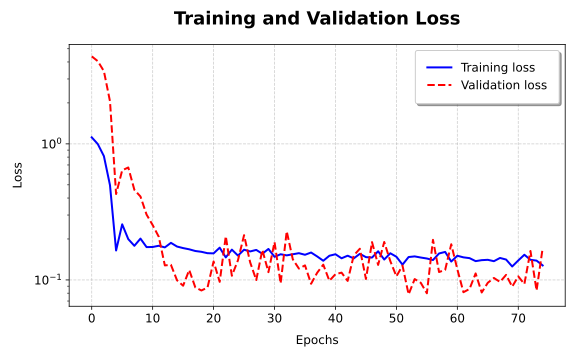
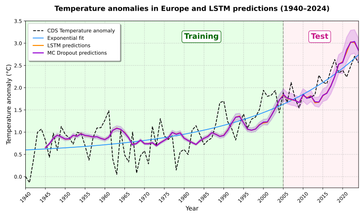
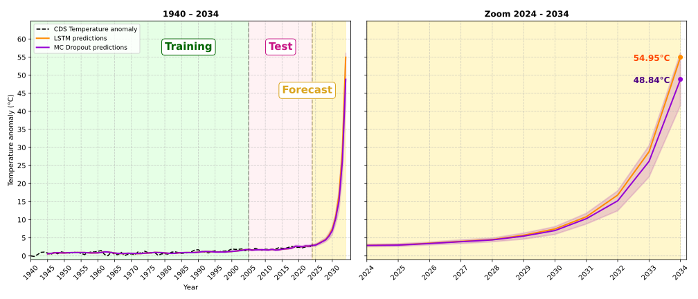

LSTM-based prediction of the mean 2m air temperature anomaly from the Copernicus Climate Data Store (CDS)
The goal of this project is to build a simple LSTM neural network that can still perform reasonably well in predicting the mean temperature anomaly in Europe. The model is trained on data from 1940 to 2004 and
evaluated on both the training data and the test data from 2005 to 2024. Different layer setups were tested to improve the model's performance. The results of the model's inference on both the training and test data are shown to give an idea of the LSTM accuracy. Specifically,
the training data is used to check if the model can reproduce the known patterns, while the test data is used to evaluate how well the model generalizes to unknown data. Finally, the trained network is used to predict future temperature anomalies between 2024 and 2035.
I used the 2m air temperature data from the
ERA5 Reanalysis dataset
provided by the Copernicus Climate Data Store (CDS). ERA5 is a global climate reanalysis dataset that provides hourly estimates of atmospheric variables, including the 2m air temperature.
The following plots summarize the main results of the project. You can view the code in the Code section, and you can download the full project
from Github to experiment and make your modifications.
Accuracy of the lstm neural network
First, the training and validation losses were plotted. The model is trained on the mean temperature data from 1940 to 2004, and validated on data from 2005 to 2024.

The training loss decreases quickly already after a few epochs, indicating that the model is learning fast. However, even if the validation loss takes longer
to decrease, it eventually falls below the training loss after several more epochs. This could be for different reasons, one being the nature of the data.
Indeed, the validation data, which spans from 2005 on, is slightly smoother, it has fewer fluctuations compared to the training data, which in contrary has
steeper peaks. As a result, the model probably finds it easier to learn from the validation data. Additionally, the dropout layer is active during training
but not during validation, as standard in Keras, which could also explain the difference of accuracy. The y-axis of the plot is logarithmically scaled to better
visualize the results.
Despite these differences, both the training and validation losses ultimately reach a sufficiently small error, showing that the model is performing well
on both datasets.
Results of the lstm predictions
Then, the results of the predictions have been plotted together with the MC dropout, which is the mean of 100 forward passes, to be able to estimate the uncertainty ranges of the model's result.

The plot shows that the mean predictions from MC dropout, in red and orange, closely match the original model predictions, in green and light blue,
and are almost overlapping. This is due to the low dropout rate of 0.2, so that the variation across different runs stays small. When comparing the MC uncertainty
for inputs from the training period and the validation period, the difference is clear. For inputs from the earlier years, data the model has already seen during
training, the uncertainty remains low, showing that the model is confident with known patterns. But in the test period, especially from year 2018 to 2024,
the uncertainty grows significantly. This is expected, since when the model makes predictions with unknown data, it becomes less certain, a common behavior
in time series models, where small differences can accumulate over time. Despite this, both the model’s predictions and the MC dropout mean follow the overall
trend of the observed temperature anomalies and match the exponential trend quite well within the uncertainty range.
In summary, the plot shows that even a simple LSTM neural network can do a good job at reproducing the trend of rising temperatures across Europe,
following the exponential pattern quite clearly.
Estimation of future temperature evolution
Finally, the trained model is used to forecast the temperature anomalies for the next 10 years.

The first plot shows the full range of temperature anomalies from 1940 to 2034, comparing the actual data with the predictions from the LSTM model and MC Dropout model, while
the second plot shows a closer look at the forecast period, focusing on the years from 2024.
Both plots show a steep rise in predicted temperature anomalies, especially after 2030. These predicted values are, of course, not realistic and come from the model's
simplistic extrapolation of historical trend, without taking into account real-world climate and feedback mechanisms. However, these results should not be interpreted as "literal" future
temperatures, as they just show the model’s learned trend, namely a rapid and accelerating increase in temperature anomalies. This also highlights the main point, that even a basic
time series model shows how fast temperatures are rising in Europe.
Creating the LSTM neural network
Install necessary packages and initialize data
import numpy as np
import xarray as xr
import matplotlib.pyplot as plt
from tensorflow.keras.models import Sequential
from tensorflow.keras.layers import LSTM, Dense, Dropout
file = 'data_t2m_tot.nc' #2m air temperature
ds = xr.open_dataset(file, chunks = {'valid_time' : 50}) #chunks for faster computation
temp = ds.t2m
Define key parameters.
yrs = range(1940, 2035)
cutoff = 66 #year 2005
forecast = 10 #years to forecast
epochs = 100
patience = 25 #early stopping if no improvement after 25 epochs
baseline = 0.02, #early stopping if improvement stays below this threshold
start_epoch = 50 #wait 50 epochs before checking for early stopping
input_size = 5
batch_size = 4
Compute the temperature anomalies as the between the mean temperature for each year and month, relative to the value for the year 1940.
Build the neural network. The model uses an LSTM lneural network, which is optimal for time series data like the one used in this project.
It consists of three LSTM layers with up to 30 neurons, which showed good performance during testing. There is a dropout layer before the final layer
to reduce the risk of overfitting. Although the dataset is relatively small, adding a low rate dropout layer gives an extra layer of caution and it also allows
to estimate the uncertainty using Monte Carlo dropout, as mentioned below.
def build_lstm(input_size):
model = Sequential()
model.add(Input((input_size, 1)))
model.add(LSTM(5, activation='relu', return_sequences=True))
model.add(LSTM(15, activation='relu', return_sequences=True))
model.add(Dropout(0.2)) #low dropout rate to prevent overfitting due to limited training data
model.add(LSTM(30, activation='relu'))
model.add(Dense(1))
model.compile(optimizer='adam', loss='mse')
model.summary() #summary of the model
return model
model_lstm = build_lstm(input_size)
An early stopping callback is defined to stop training once the model stops improving, as this helps save computation time and prevents overfitting by avoiding unnecessary epochs.
early_stopping = EarlyStopping(monitor = 'val_loss', #monitor the test error
patience = patience,
verbose = 1, #shows when callback is used
baseline = baseline,
restore_best_weights = True, #restore weights from the best performing epoch
start_from_epoch = start_epoch)
Define a function to prepare the input data by splitting it into overlapping sequences of fixed length. For example, if given the list [1, 2, 3, 4, 5, 6]
and an input size of 3, the function returns the input sequences [[1, 2, 3], [2, 3, 4], [3, 4, 5]], together with their corresponding output values [4, 5, 6].
def prep_data(data, input_size):
x = np.zeros((len(data) - input_size, input_size))
for i in range(len(x)):
x[i] = data[i:i+input_size] #input data
y = np.array(data[input_size:]) #output data
return x, y
Format the data and prepare it for training and testing.
#split data
training = anom_year_vals[:cutoff]
test = anom_year_vals[cutoff - input_size -1:] #-1 to let it begin with the last year of training
#format into input-output pairs
x_train, y_train = prep_data(training, input_size)
x_test, y_test = prep_data(test, input_size)
Define the Monte Carlo dropout function following Gal & Ghahramani (2015) to estimate the uncertainty of the model.
The MC dropout keeps the dropout layer active during inference, instead of only during training. Then, by performing multiple forward passes with the same
input, the MC dropout generates a distribution of outputs. The mean corresponds to the final prediction, while the variance reflects the model’s confidence.
Also define an exponential fit to model the warming trend in the temperature anomaly. This is used to compare between the neural network's predictions and the
overall trend, checking if the model captures the exponential nature of the warming over time.
def MC_dropout(model, X, n):
preds = np.array([model(X, training=True) for i in range(n)])
mean_preds = preds.mean(axis=0)
var = preds.var(axis=0)
return mean_preds.flatten(), var.flatten()
def exp_fit(x, a, b, c):
return a*np.exp(b * x) + c
def Uncertainty_plt(ax, x, y, mean, std, label_y, label_m, color_y, color_m, linewidth):
ax.plot(x, y, label=label_y, color=color_y, linewidth= linewidth) #lstm prediction
ax.plot(x, mean, label=label_m, color=color_m, linewidth= linewidth) #mc dropout prediction
ax.fill_between(x, mean + std, mean - std, color=color_m, alpha=0.2, linewidth= linewidth) #range of uncertainty
Display the results in a line plot.
This plot shows the neural network's predictions together with the actual temperature anomalies. The black line represents the observed temperature
anomalies, while the blue line shows the exponential fit. The orange line represents the inference results of the model for the training and test data.
The purple line show the results of the MC dropout, here taken as the mean of 100 forward passes. The uncertainty from MC dropout predictions
is represented by the shaded regions in purple. The background colors indicate the training and test regions..
With the trained model, it is now possible to make predictions for future years to estimate how the mean temperature anomaly in Europe might change.
Reshape the input data, so that the model predicts one year at a time. Each new prediction is added to the input sequence to predict the next year.
last = anom_year_vals[-5:].reshape(1,5) #2024, adjust to match the wanted shape
preds_future = []
preds_yrs = 11
for i in range(preds_yrs):
pred = model_lstm.predict(last, verbose=0).flatten()
preds_future.append(pred)
last = np.append(last, pred)[-5:].reshape(1,5) #new input
preds_future = np.reshape(preds_future, preds_yrs)
Compute the mean MC Dropout forecast similarly, but this time using the MC Dropout prediction function instead of the standard LSTM model.
last = anom_year_vals[-5:].reshape(1,5) #2024, adjust to match the wanted shape
preds_future = []
preds_yrs = 11
for i in range(preds_yrs):
pred = model_lstm.predict(last, verbose=0).flatten()
preds_future.append(pred)
last = np.append(last, pred)[-5:].reshape(1,5) #new input
preds_future = np.reshape(preds_future, preds_yrs)
np.savez("future_LSTM.npz", preds_future = preds_future,
preds_future_MC = preds_future_MC, std_dev_MC = std_dev_MC)
Plot the results in a line plot.
The first plot shows the full range of temperature anomalies from 1940 to 2034, comparing the actual data with the predictions from the LSTM model and MC Dropout model.
The LSTM predictions are shown in orange, while the MC Dropout results are shown in purple, together with shaded uncertainty regions representing the prediction accuracy.
The second plot shows a closer look at the forecast period, focusing on the years from 2024. It highlights the predicted anomalies from both models and their uncertainty regions,
for a more detailed examination of the extrapolated trends. Both plots include the training, test, and forecast phases.